13 Chronological Cartograpms
Let’s now create a series of maps on all the people that we have in PUA within al-Andalus across the covered period. (Following the US cities example from the previous lesson).
PUA <- readRDS("./data/PUA_processed/PUA_allDataTables_asList_UPDATED.rds")
personaje_with_dates <- PUA$personaje_decadas_modeladas
personaje_with_places <- PUA$personaje_lugar %>%
filter(idPersonaje %in% personaje_with_dates$idPersonaje) %>%
select(idPersonaje, idLugar) %>%
left_join(PUA$lugar) %>%
select(idPersonaje, idLugar, lat, lng) %>%
left_join(PUA$lugar_con_imanes) %>%
filter(!is.na(region)) %>%
select(idPersonaje, idLugar, lat, lng, region, latR, lngR)## Joining with `by = join_by(idLugar)`
## Joining with `by = join_by(idLugar, lat, lng)`## # A tibble: 10,188 × 7
## idPersonaje idLugar lat lng region latR lngR
## <dbl> <dbl> <dbl> <dbl> <chr> <dbl> <dbl>
## 1 1 4 37.9 -4.78 Córdoba 37.9 -4.78
## 2 7 4 37.9 -4.78 Córdoba 37.9 -4.78
## 3 8 8 36.5 -5.93 Algeciras 36.1 -5.45
## 4 9 4 37.9 -4.78 Córdoba 37.9 -4.78
## 5 4159 4 37.9 -4.78 Córdoba 37.9 -4.78
## 6 12 10 41.6 -0.883 Zaragoza 41.6 -0.883
## 7 19 15 37.2 -5.10 Córdoba 37.9 -4.78
## 8 21 17 39.2 -0.435 Valencia 39.5 -0.375
## 9 21 18 38.0 -1.13 Murcia 38.0 -1.13
## 10 22 19 39.0 -0.519 Valencia 39.5 -0.375
## # ℹ 10,178 more rowsNow, let’s left_join with modeled decades. Essentially, this will create lots of “duplicates” for each person—a single person-place row will be duplicated as many times as there are decades for that individual.
personaje_with_places_and_dates <- personaje_with_places %>%
left_join(personaje_with_dates)
personaje_with_places_and_dates## # A tibble: 82,261 × 8
## idPersonaje idLugar lat lng region latR lngR decadas
## <dbl> <dbl> <dbl> <dbl> <chr> <dbl> <dbl> <dbl>
## 1 1 4 37.9 -4.78 Córdoba 37.9 -4.78 120
## 2 1 4 37.9 -4.78 Córdoba 37.9 -4.78 130
## 3 1 4 37.9 -4.78 Córdoba 37.9 -4.78 140
## 4 1 4 37.9 -4.78 Córdoba 37.9 -4.78 150
## 5 1 4 37.9 -4.78 Córdoba 37.9 -4.78 160
## 6 1 4 37.9 -4.78 Córdoba 37.9 -4.78 170
## 7 1 4 37.9 -4.78 Córdoba 37.9 -4.78 180
## 8 7 4 37.9 -4.78 Córdoba 37.9 -4.78 350
## 9 7 4 37.9 -4.78 Córdoba 37.9 -4.78 360
## 10 7 4 37.9 -4.78 Córdoba 37.9 -4.78 370
## # ℹ 82,251 more rowsNow we can split this table into two: one will have the minor places count, while the other will have counts for our magnets.
minor_places_over_time <- personaje_with_places_and_dates %>%
group_by(idLugar, lat, lng, decadas, region) %>%
summarize(people = n()) %>%
arrange(decadas) %>%
pivot_wider(names_from = decadas, values_from = people) %>%
pivot_longer(cols = "20":"930", names_to = "decadas", values_to = "people") %>%
ungroup()## `summarise()` has grouped output by 'idLugar', 'lat', 'lng', 'decadas'. You can override using the `.groups`
## argument.imanes_decadas <- personaje_with_places_and_dates %>%
group_by(region, latR, lngR, decadas) %>%
summarize(people = n()) %>%
arrange(decadas) %>%
pivot_wider(names_from = decadas, values_from = people) %>%
pivot_longer(cols = "20":"930", names_to = "decadas", values_to = "people") %>%
mutate(decadas = as.numeric(decadas)) %>%
ungroup()## `summarise()` has grouped output by 'region', 'latR', 'lngR'. You can override using the `.groups` argument.We can now use both layers to map data at two scales:
andalus <- base_plot_andalus_themed +
geom_point(data = imanes_decadas,
aes(x = lngR, y = latR, size = people, col = region),
alpha = 0.5, show.legend = FALSE) +
geom_point(data = minor_places_over_time,
aes(x = lng, y = lat, size = people, col = region),
alpha = 0.75, show.legend = FALSE) +
geom_text(data = imanes_decadas,
aes(x = lngR + 0.05, y = latR + 0.05, label = region),
size = 3, alpha = 0.5) +
scale_size_continuous(range = c(0.05, 20))
andalus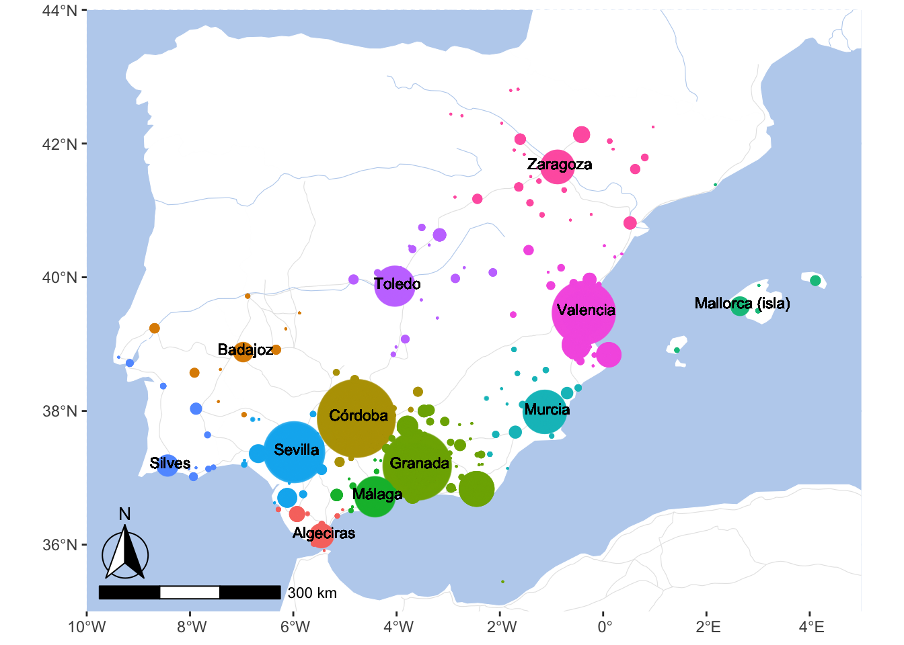
13.0.1 Animated Map Approach
Animating the map can be quite annoying. however, below is the code. Keep in mind that it takes a while to generate animation. While you are developing it, it is worth reducing the quality of the animation: 1) reduce the duration to 10-20 seconds; 2) reduce the width and height; 3) reduce the resolution to 100 or less. If your animation looks like what you want, you can then select all the high quality parameters and generate the final result.
library(gganimate)
library(gifski)
andalusAnimated <- andalus +
transition_states(decadas) +
labs(title = "al-Andalus: {closest_state} AH")
anim_save("./images/generated/Andalus_Animated_01.gif", animation = andalusAnimated,
duration = 60, fps = 2, end_pause = 10,
rewind = FALSE, height = 5, width = 7, units = "in", res = 200)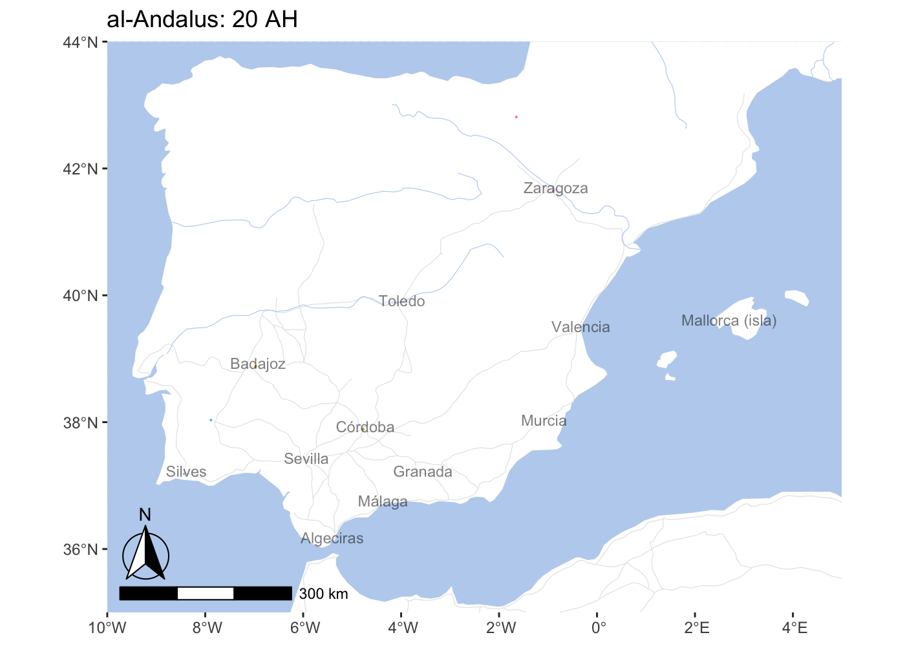
13.0.2 “Frame-by-Frame” Approach
Alternatively, one can generate individual maps of each and every decade and aggregate them into an animation using other means. However, in most cases, static maps of specific periods would be of much greater use, both for presentations and for publications. We can generate such maps using a loop. We can either loop over all the decades (which we have in the vector imanes_decadas$decadas), or, we can reduce the number of decades for which we generate maps (using for example this vector: seq(100, 900, 100)).
Note: we need to add some modification to the scaling parameters, expressed in the global_range variable. Essentially, we need to adjust our scaling to the values for all the periods.
global_range <- range(imanes_decadas$people, minor_places_over_time$people, na.rm = TRUE)
for (d in seq(100, 900, 100)) {
# TEMP DATA
imanes_decadas_temp <- imanes_decadas %>%
filter(decadas == d)
minor_places_over_time_temp <- minor_places_over_time %>%
filter(decadas == d)
# TEMP MAP
map_temp <- base_plot_andalus_themed +
geom_point(data = imanes_decadas_temp,
aes(x = lngR, y = latR, size = people, col = region),
alpha = 0.5, show.legend = FALSE) +
geom_point(data = minor_places_over_time_temp,
aes(x = lng, y = lat, size = people, col = region),
alpha = 0.75, show.legend = FALSE) +
geom_text(data = imanes_decadas_temp,
aes(x = lngR + 0.05, y = latR + 0.05, label = region),
size = 3, alpha = 0.5, family = "Brill") +
scale_size_continuous(range = c(0.05, 20), limits = global_range) +
ggtitle(paste0("al-Andalus in ", d, "AH")) +
theme(plot.title = element_text(family = "Brill"))
# SAVE TEMP MAP
fileName <- paste0("PUA_Andalus_BubbleMap_",
stringr::str_pad(d, width = 4, side = "left", pad = "0"),
".png")
fullPath <- paste0("./images/generated/", fileName)
ggsave(fullPath, plot = map_temp, width = 160, height = 120,
units = "mm", dpi = "retina")
}Our results are for the following time frames: 100, 200, 300, 400, 500, … 900 AH.
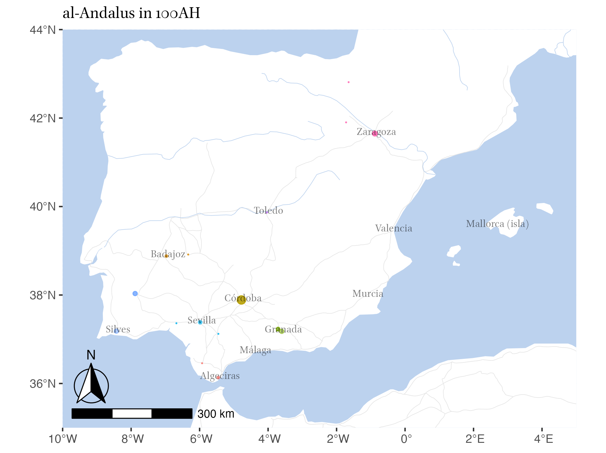 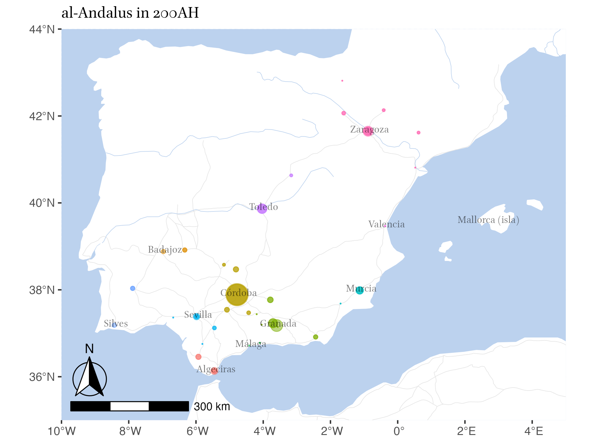 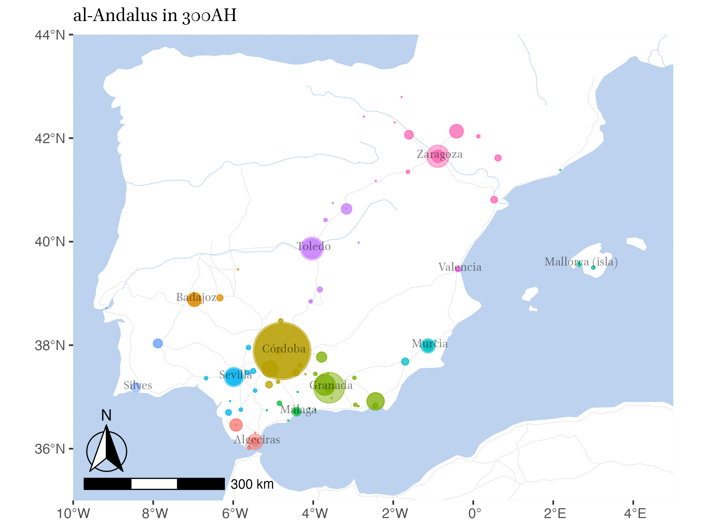
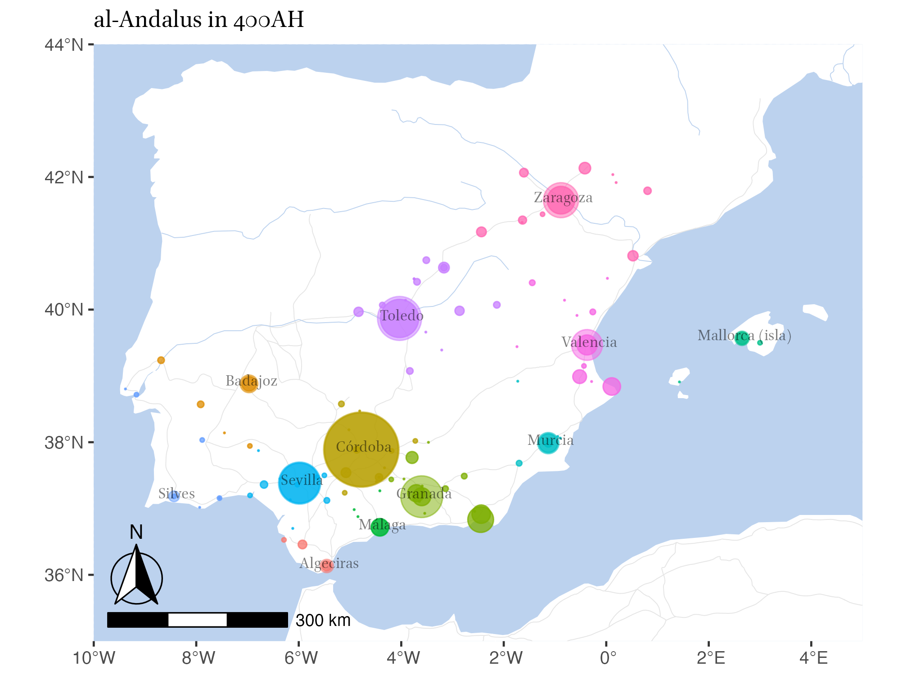 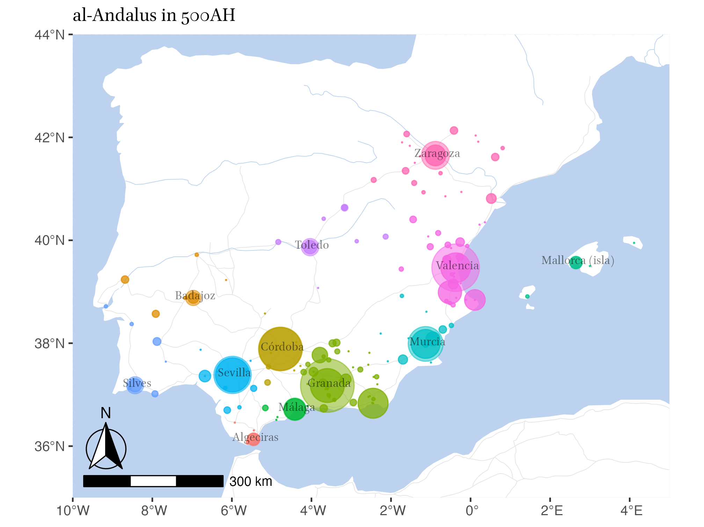
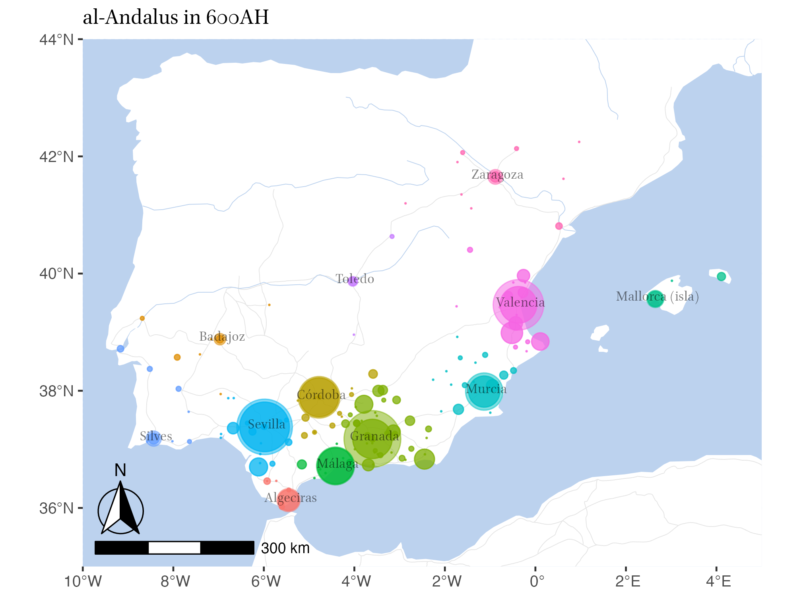
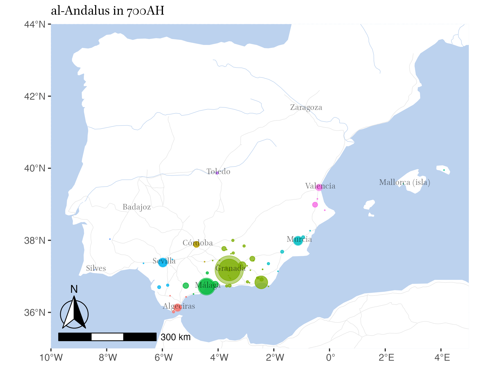
13.1 Chrono-Geographical Information without Maps
We can visualize our data by regions in a manner we have already used:
andalus_01 <- ggplot() +
geom_line(data = imanes_decadas, aes(x = as.integer(decadas), y = people, color = region), linewidth = 1) +
facet_wrap(~ region) +
theme_minimal() +
labs(title = "Andalusian regions over time")
andalus_01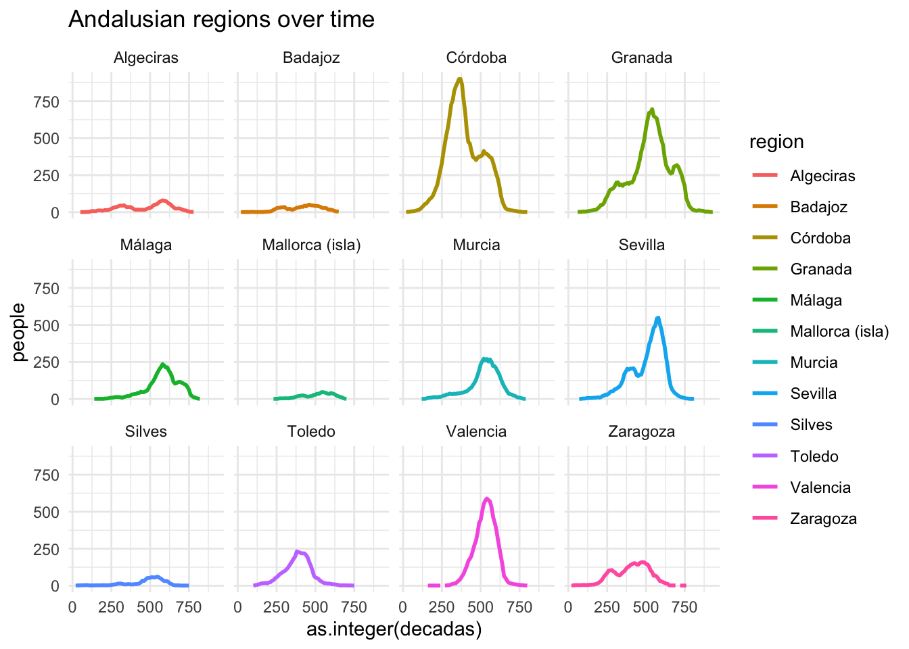
Alternatively, we can also arrange this tabular format in such a way that would visually resemble the geography of al-Andalus. For this we can use the library geofacet that also has a nice interface for arranging the grid:
library(geofacet)
andalusGridInitial <- tibble(
code = seq(1,12),
name = unique(imanes_decadas$region),
row = seq(1,12),
col = seq(1,12),
)
grid_design(data = andalusGridInitial)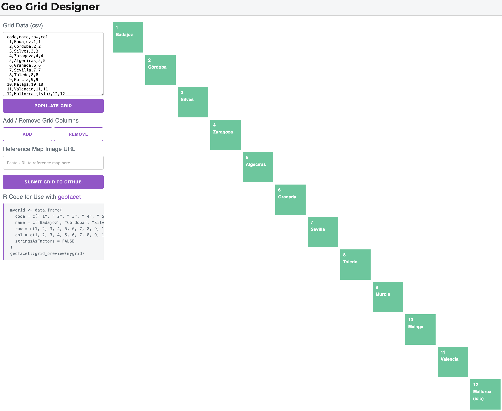 Using this convenient interface, one can easily rearrange squares into a more geographically suggestive table. In our case it may look like the following:
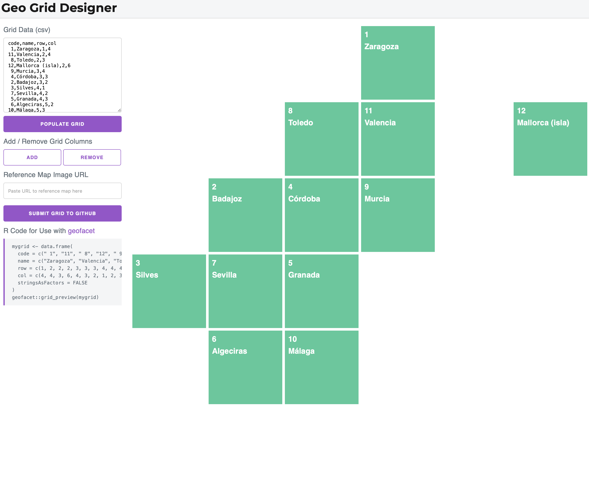
andalusGrid <- data.frame(
code = c(" 1", "11", " 8", " 9", " 4", " 2", "12", " 3", " 7", " 5", " 6", "10"),
name = c("Zaragoza", "Valencia", "Toledo", "Murcia", "Córdoba", "Badajoz", "Mallorca (isla)", "Silves", "Sevilla", "Granada", "Algeciras", "Málaga"),
row = c(1, 2, 2, 3, 3, 3, 2, 4, 4, 4, 5, 5),
col = c(4, 4, 3, 4, 3, 2, 6, 1, 2, 3, 2, 3),
stringsAsFactors = FALSE
)
# run this line separately , if you want to open grid editor;
# no need to have it uncommented, if you want to generate a notebook
geofacet::grid_preview(andalusGrid)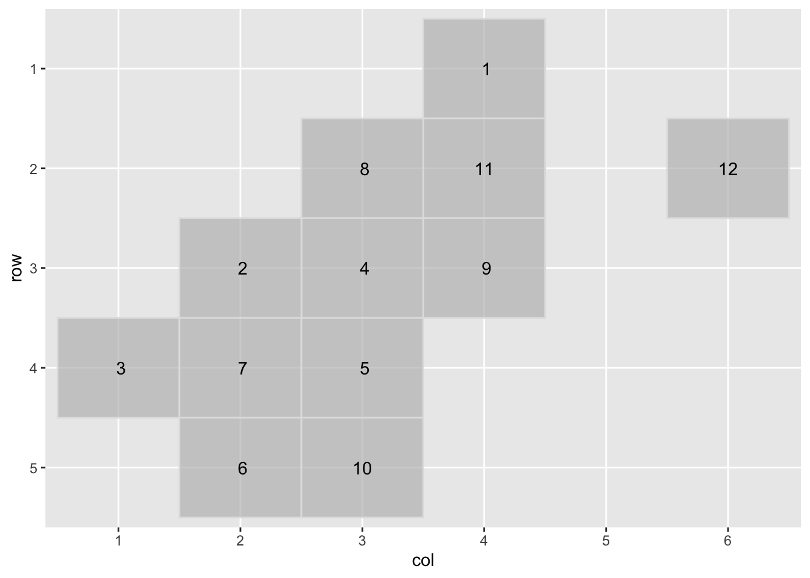
Now, we can use this grid to visualize our geographical curves:
imanes_decadas_test <- imanes_decadas %>%
rename(name = region)
andalusGridGraph <- ggplot(data = imanes_decadas_test,
aes(x = as.integer(decadas), y = people)) +
geom_line(linewidth = 1) +
facet_geo(~ name, grid = andalusGrid, label = "name") +
labs(title = "al-Andalus of the Islamic Period, c. 100-900 AH",
caption = "Data Source: `PUA Database`",
x = "Decade", y = "People", family = "Brill") +
theme_minimal() +
theme(axis.text.x = element_text(angle = 90))
andalusGridGraph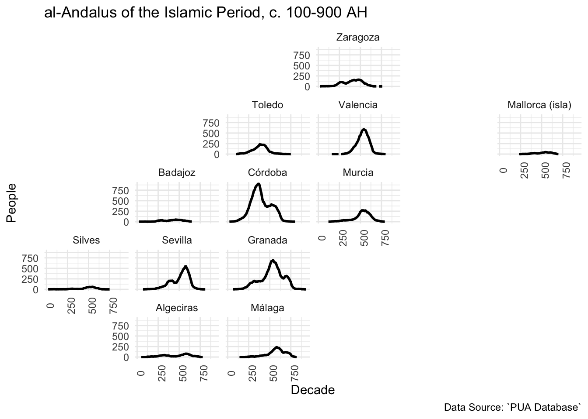
ggsave("./images/generated/andalusGridGraph.png",
plot = andalusGridGraph, width = 420, height = 297,
units = "mm", dpi = "retina")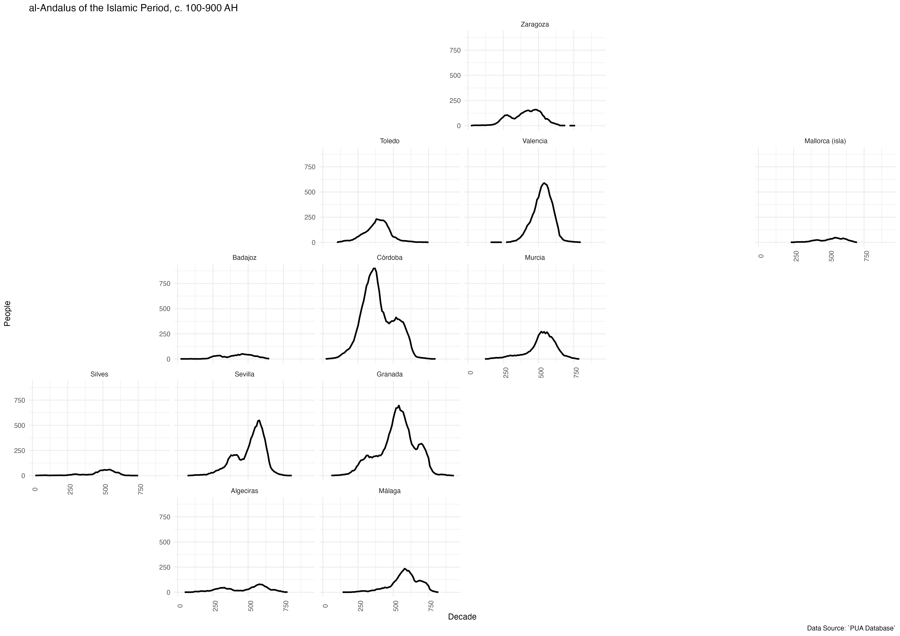